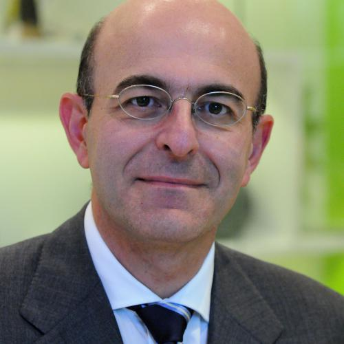

ISSC 2018
Keynote Speakers
Dennis Andrucyk

Dennis Andrucyk is the deputy associate administrator for NASA's Science Mission Directorate (SMD).
Dennis Andrucyk, Deputy Associate Administrator
Prior to joining SMD, Andrucyk served as NASA’s acting chief technologist and as deputy associate administrator for the Space Technology Mission Directorate and held many positions at NASA’s Goddard Space Flight Center. At Goddard, he was Director of the Applied Engineering & Technology Directorate, serving as Director of Engineering, Deputy Director of Engineering, Chief of the Software Engineering Division, and Chief of the Mission Engineering and Systems Analysis Division. He also served as Goddard’s Chief Technologist and as the Associate Chief of the Electrical Engineering Division. While enrolled in the Senior Executive Service Candidate Development Program, he spent a short time at NASA Headquarters as a Division Chief where he was the Director of the Mission & Science Measurement (MSM) Theme/Division. In 2000, he was selected as a Goddard Senior Fellow.
Andrucyk has served on several national and international space partnership teams including the U.S.-based Space Technology Alliance as one of three voting members on the North Atlantic Treaty Organization’s (NATO) Sensors & Electronics Technology (SET) panel.
Before joining NASA in 1988, Andrucyk served at the Department of Defense as both a contractor and a civil servant. He has worked at the National Security Agency, the Naval Research Laboratory, Westinghouse Electric, General Electric, and the Northrop Grumman Corporation.
Andrucyk has earned the Senior Executive Service Meritorious Presidential Rank Award, the NASA Medal for Outstanding Leadership, the NASA Exceptional Service Medal, the Goddard Outstanding Leadership Honor Award, and the Goddard Exceptional Achievement Award in Diversity and Equal Employment Opportunity.
Sergio Pellegrino

Sergio Pellegrino, Joyce and Kent Kresa Professor of Aeronautics and Professor of Civil Engineering at the California Institute of Technology and JPL Senior Research Scientist, received a Laurea in Civil Engineering from the University of Naples in 1982 and a PhD in Structural Mechanics from the University of Cambridge in 1986.
His general area of research is the mechanics of lightweight structures, with a focus on packaging, deployment, shape control and stability. With his students and collaborators, he is currently working on novel concepts for future space telescopes, spacecraft antennas, and space-based solar power systems.
As a member of the NASA Superpressure Balloon design team, for over 10 years he has worked on analysis methods for stratospheric balloons. Dr Pellegrino's publications have been selected for several awards, including the ICE James Watt Medal 2000; AIAA Gossamer Spacecraft Forum Best Paper Award in 2004, 2005, 2006, 2011 and 2013; IASS Tsuboi Award in 2004, 2005, and 2007; ASME/Boeing Best Paper Award in 2008; and ASME Mechanisms and Robotics Committee Best Paper Award in 2013. He has received a Pioneers' Award in 2002 from the Space Structures Research Center, University of Surrey and a NASA Robert H. Goddard Exceptional Achievement Team Award in 2009.
Dr Pellegrino is a Fellow of the Royal Academy of Engineering, a Fellow of AIAA and a Chartered Structural Engineer. He is President of the International Association for Shell and Spatial Structures (IASS) and Editor-in-Chief of the Journal of the IASS. Dr Pellegrino is the author of over 250 technical publications.